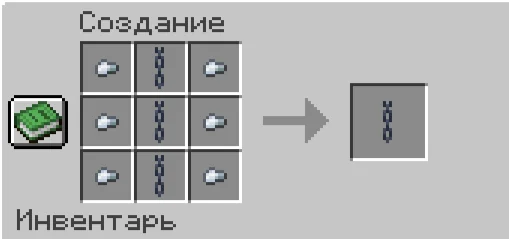
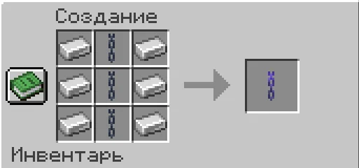

Цепи и редстоун
Мастер-Цепь, Ультра Мастер-Цепь, передача редстоуна и поездка.
Цепи соединяют блоки и позволяют передавать редстоун-сигнал. По Ультра Мастер-Цепи можно также перемещаться.
Крафт и ограничения
| Цепь | Рецепт | Максимальная длина |
|---|---|---|
| Мастер-Цепь | 3 обычные цепи в центральном столбце, по 3 железных самородка слева и справа | 7 блоков |
| Ультра Мастер-Цепь | 3 Мастер-Цепи в центральном столбце, по 3 железных слитка слева и справа | 45 блоков |
Мастер-Цепь

Ультра Мастер-Цепь

Установка и обслуживание
- Возьми цепь в основную руку, нажми ПКМ по грани твёрдого блока — это вход.
- Нажми ПКМ по грани другого блока — это выход. Длина считается по прямой между центрами граней, в том числе по диагонали. Предмет расходуется при успешном креплении.
- Настрой натяжение гаечным ключом: каждый ПКМ повышает уровень на один, от 1 до 7.
- Обработай цепь пчелиными сотами, чтобы натяжение не ослабевало при изменении сигнала.
💡 На одной грани возможно только одно крепление. Через каждый чанк проходит не более одной Ультра-Цепи; учитывается вся трасса.
При наведении с ключом входное звено светится зелёным, остальные — белым.
| Действие | Как сделать |
|---|---|
| Срезать цепь с возвратом предмета | ПКМ ножницами |
| Отменить выбор крепления | /chains cancel |
Передача редстоуна
Подай редстоун-сигнал к первому блоку, а возле второго размести редстоун-пыль. Направление сигнала задаётся порядком установки креплений.
При максимальном входном сигнале 15 получаются такие выходные значения:
| Натяжение | Выходной сигнал |
|---|---|
| 1 | 0 |
| 2 | 2 |
| 3 | 5 |
| 4 | 7 |
| 5 | 10 |
| 6 | 12 |
| 7 | 15 |
Если цепь не обработана сотами, каждое изменение силы сигнала уменьшает натяжение на один уровень. Постоянный сигнал цепь не изнашивает.
Поездка на Ультра-Цепи
Нажми один раз ПКМ по Ультра-Цепи — подвес разгонится и затормозит у конца. Чтобы сойти на ходу, нажми Shift или введи /chains cancel. Ключ, ножницы и соты сохраняют обычное действие при клике. Предмет для поездки в инвентарь не выдаётся.
Все статьи вики ↗